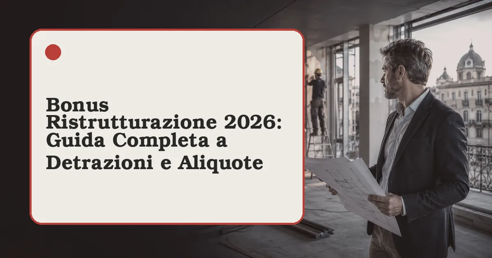

Bonus & Fisco · Guida 2026Bonus Ristrutturazione 2026: la guida completa a detrazioni, aliquote e adempimenti
Detrazione al 50% per la prima casa e al 36% per le altre abitazioni, massimale confermato a 96.000 euro: regole, interventi ammessi ed errori da evitare per non perdere il bonus.